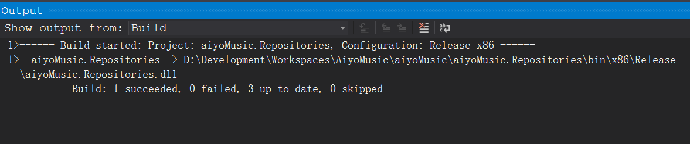
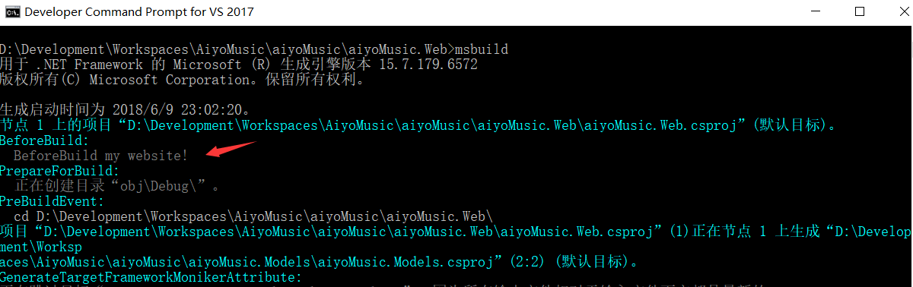

msbuild(1)-基本使用
使用MS的开发工具Visual Studio(以下简称VS)不得不使用msbuild进行项目的构建。VS能简化很多工作，同时也隐藏了很多内部实现细节。其中包括点击”部署”(publish)的时候VS通过msbuild为我们做了哪些工作？
参阅msbuild官网文档，归纳如下！
Property属性(自定义变量)
通常构建系统需要使用到自定义变量，便于扩展和修改。
<?xml version="1.0" encoding="utf-8"?>
<!--根元素，表示一个项目-->
<!--DefaultTargets用于定默认执行的目标-->
<Project DefaultTargets="build" xmlns="http://schemas.microsoft.com/developer/msbuild/2003">
<!--属性都要包含在PropertyGroup元素内部-->
<PropertyGroup>
<!--声明一个"MyVar"变量，其值为"hello world"-->
<MyVar>hello world</MyVar>
</PropertyGroup>
<!--目标-->
<Target Name="build">
<!--MSBuild提供的一个内置任务，用于生成记录信息用$(属性名)来引用属性的值-->
<Message Text="$(MyVar)"></Message>
</Target>
</Project>
说明：申明了一个MyVar的变量，然后在后面的Target中使用。变量取值无论在cmd批处理，还是在linux的shell中都是通过$来取值！
msbuild的保留属性(全局变量)
msbuild自己保留了一些全局变量，通过这些变量可以很方便的进行文件定位！例如，$(MSBuildProjectFile) 返回项目文件，其中包括文件扩展名的完整文件名。 MSBuild 保留属性和已知属性
函数属性(可以进行一些变量的处理)
ItemGroup项(引用文件的集合)
可定义一组经由外部引入的文件，通常将这类型文件作为Task的输入参数进行调用！
<?xml version="1.0" encoding="utf-8"?>
<Project DefaultTargets="build" xmlns="http://schemas.microsoft.com/developer/msbuild/2003">
<!--项都要包含在ItemGroup元素内部-->
<ItemGroup>
<!--声明一个"CSFile"的项，Include表示引入"csfile1.cs"文件-->
<CSFile Include="csfile1.cs">
<!--Version表示项的元数据（附加信息）-->
<Version>1.0.0.0</Version>
</CSFile>
<!--也可用";"一次引入多个文件-->
<CSFile Include="csfile2.cs;csfile3.cs"/>
</ItemGroup>
<Target Name="build">
<!--@引用项的值，默认以";"分割开-->
<!--输出"csfile1.cs;csfile2.cs;csfile3.cs"-->
<Message Text="@(CSFile)"></Message>
<!--可以加第二个参数替换默认的";"分隔符-->
<!--输出"csfile1.cs+csfile2.cs+csfile3.cs"-->
<Message Text="@(CSFile,'+')"></Message>
<!--%引用项的元数据，输出"1.0.0.0"-->
<Message Text="%(CSFile.Version)"></Message>
</Target>
</Project>
说明：@符号有import的功能的意思！项是外部引入文件，所以在使用它的时候用@符号引用(在css中也是使用@符号做引用)。
将”引用文件的集合”传递给任务
You must use wildcards with items to specifiy the inputs for a build; you cannot specify the inputs using the Sources attribute in MSBuild tasks such as Csc or Vbc. The following example is not valid in a project file:
<CSC Sources="*.cs">...</CSC>
当有多个文件要传递给task处理的时候，必须通过”文件集合”(ItemGroup)使用通配符的方式来指定”输入文件”！
Visual Studio(VS)与msbuild的集成
新建web项目都会生成一个*.csproj的msbuild的工程文件，这个工程文件就是供IDE调用msbuild进行项目构建的时候使用的。我们使用notepad++打开，文件结构如下：
<!-- To modify your build process, add your task inside one of the targets below and uncomment it.
Other similar extension points exist, see Microsoft.Common.targets. -->
<Target Name="BeforeBuild">
<Message Text="BeforeBuild my website!"></Message>
</Target>
<Target Name="AfterBuild">
<Message Text="AfterBuild my website!"></Message>
</Target>
我们使用右键项目build，在build前后分别会调用”BeforeBuild”和”AfterBuild”的目标。 但是我们在”Output”窗口并没有看到输出的消息，这应该是IDE过滤了msbuild的构建消息。  但是我们通过cmd命令行运行的时候是可以看到输出消息的！  可以看出msbuild自动调用了”BeforeBuild”和”AfterBuild”的Target 如果想在IDE的Output看到输出信息(调试使用)。
详见： MSBuild(2)
<Target Name="BeforeBuild">
<Warning Text="BeforeBuild my website!"></Warning>
</Target>
自定义*.pubxml部署站点
.pubxml文件配置:
<Target Name="AfterBuild">
<Warning Text="obj\$(LastUsedPlatform)\$(LastUsedBuildConfiguration)\Package\PackageTmp\Content\test.css"></Warning>
<Delete Files="@(Item)"></Delete>
</Target>
在.pubxml中我们添加了一个名为”AfterBuild”的Target，但是这个Target在通过IDE点击发布的时候是并不会被调用执行的。如果希望在pubxml中使用Target可以按如下配置：
<Target Name="DelCss" AfterTargets="AfterBuild">
<Warning Text="obj\$(LastUsedPlatform)\$(LastUsedBuildConfiguration)\Package\PackageTmp\Content\test.css"></Warning>
<Delete Files="@(Item)"></Delete>
</Target>
- 给Target一个非”AfterBuild”关键字的名字，比如示例中的”DelCss”
- 给Target添加键值对AfterTargets=“AfterBuild”
猜测：VS似乎并不是直接使用msbuild .pubxml来构建发布过程，而是将.pubxml整合进主工程的工程文件(*.csproj)中去，然后msbuild *.csproj
pubxml中的文件路径
由于pubxml文件最终会整合到*.csproj文件中去，所以.pubxml中的文件相对路径是根据.csproj文件来的。 比如目录结构如下：
- website
- site.csproj
- Properties
- PublishProfiles
- site.pubxml
- site.pubxml
- obj
- site.csproj
要在.pubxml中引用obj文件夹底下的文件，在pubxml中使用相对于site.csproj的文件路径即可：”obj*.“